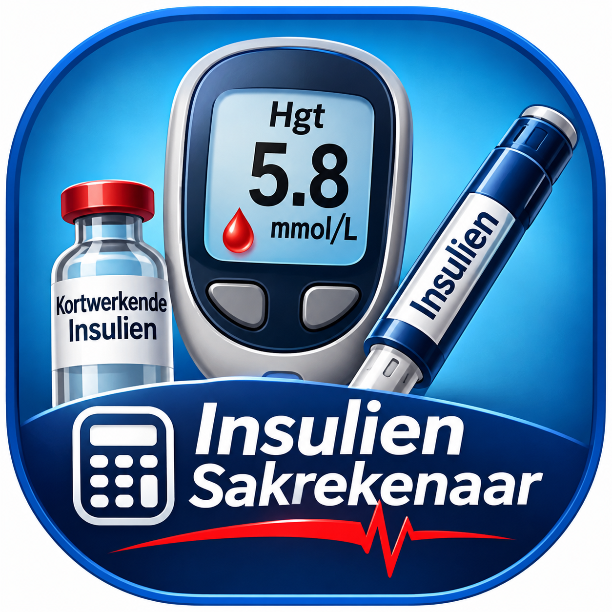

Insulien Sakrekenaar
Koolhidrate + jou bestaande Hgt-korreksieskaal
Berekening volgens jou ingestelde verhouding en verskafde Hgt-tabel
Hierdie week
Nog geen gestoorde inskrywings nie.
Weekverslag
Hgt-tendens hierdie week
Hgt (mmol/L)
Nog geen inskrywings gestoor nie.